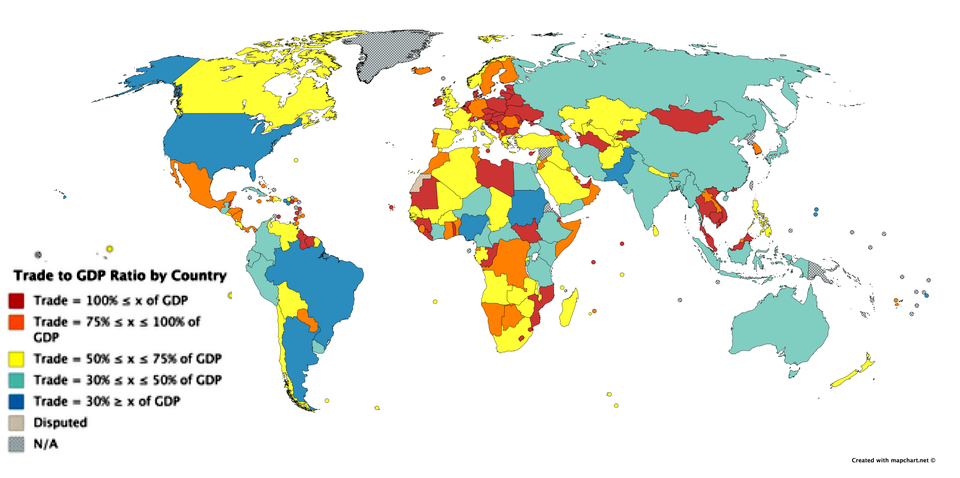
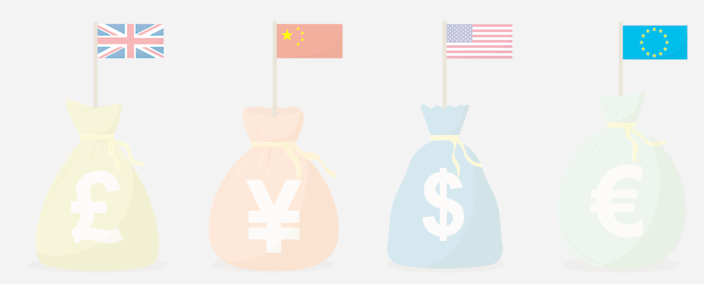
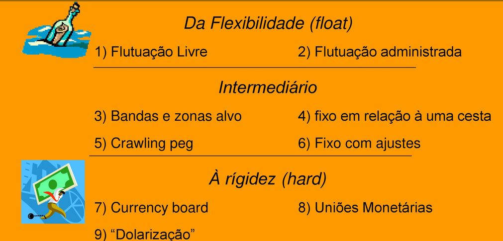
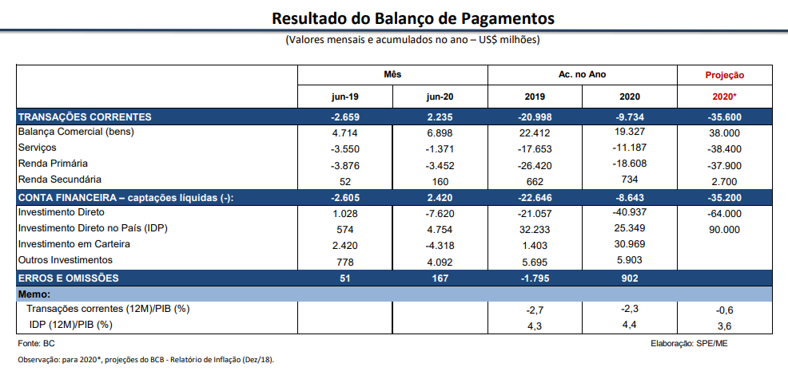
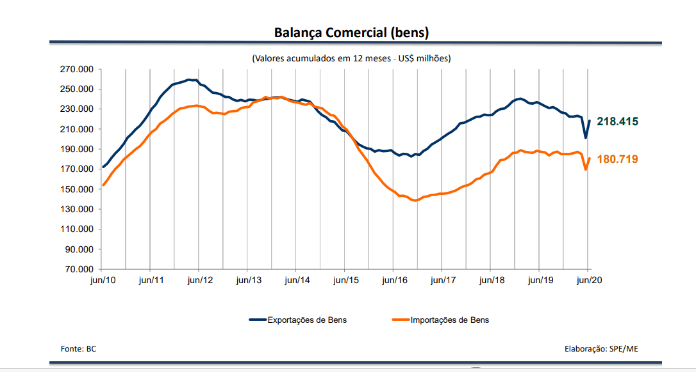
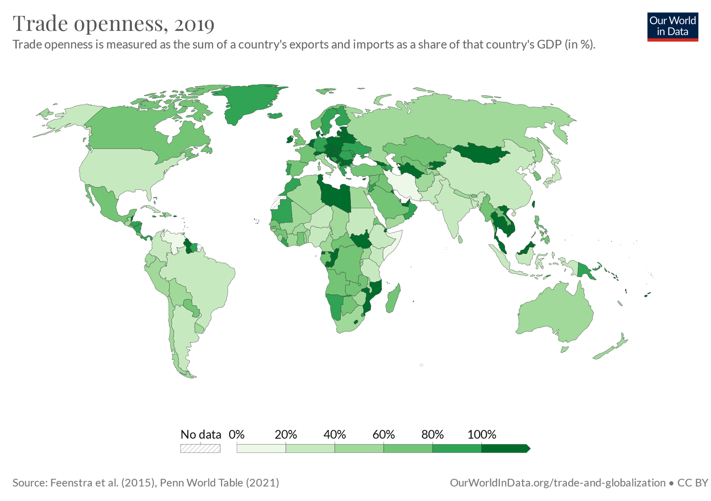

Como a economia se relaciona com o resto do mundo
A aula reúne sete ideias centrais: vantagens comparativas, taxa de câmbio, efeitos do câmbio sobre exportações, importações, inflação e dívida, variáveis que afetam a balança comercial, políticas externas, balanço de pagamentos e internacionalização da economia.
especialização e comércio
preço da moeda estrangeira
balança comercial, conta corrente e capitais
Ideia-força: o setor externo não é um “capítulo à parte”. Câmbio, juros, inflação, comércio e crescimento se misturam o tempo inteiro. Economia aberta é assim: ninguém fica sozinho no baile.
Por que os países comercializam?
Vantagens comparativas
Segundo David Ricardo, cada país tende a se especializar na produção do bem em que é relativamente mais eficiente ou tem custo relativamente menor. Esse bem tende a ser exportado; os demais, importados.
Especialização e troca
A especialização permite ampliar a eficiência produtiva e explicar por que países com estruturas diferentes trocam bens entre si. O ganho não vem de fazer tudo, mas de fazer relativamente melhor aquilo em que se é mais competitivo.

O preço da moeda estrangeira
Definição
Taxa de câmbio é o preço da moeda estrangeira em termos da moeda nacional, ou vice-versa. No Brasil usa-se a convenção do incerto: por exemplo, US$ 1 = R$ x.
A taxa sobe: desvalorização cambial.
A taxa cai: valorização cambial.
Oferta e demanda de divisas
Oferta de divisas: exportações e entrada de capitais externos.
Demanda de divisas: importações e saída de capitais, como amortizações, juros e remessas de lucros.

Regimes cambiais
Fixo: BC determina a taxa.
Flutuante: mercado determina a taxa.
Dirty floating: regime flutuante com atuação frequente do BC, o caso mais comum nas economias modernas.

Câmbio nominal e câmbio real
A competitividade externa depende mais da taxa de câmbio real do que da nominal, porque é preciso considerar a inflação doméstica e os preços externos.
Se a desvalorização nominal for anulada pela inflação interna, pode não haver ganho real de competitividade.
Exportações, importações, inflação, dívida e juros
Desvalorização cambial
Tende a estimular exportações e desestimular importações, pois o produto nacional fica relativamente mais barato para o estrangeiro e o importado fica mais caro em reais.
Valorização cambial
Tende a desestimular exportações e estimular importações. Pode ser usada como âncora anti-inflacionária, mas cobra um preço em competitividade externa.
Efeito sobre a inflação
Valorização: reduz preço dos importados e aumenta concorrência, ajudando a conter inflação.
Desvalorização: encarece importados — inclusive bens essenciais e insumos — e pressiona custos de produção.
Efeito sobre a dívida externa
Se a dívida é denominada em dólares, a desvalorização aumenta o estoque em reais; a valorização, ao contrário, reduz esse estoque em moeda nacional.
Juros e câmbio
Se a taxa real de juros interna sobe em relação à externa, tende a ocorrer entrada de capitais, aumento da oferta de divisas e valorização da moeda nacional. Ao mesmo tempo, nacionais podem preferir aplicar internamente, reduzindo a saída de divisas.
Exportações agregadas
Aumentam com preços externos, taxa de câmbio, renda mundial e subsídios; caem com preços domésticos em dólar.
Importações agregadas
Caem com preços externos, taxa de câmbio e tarifas; aumentam com preços domésticos e renda nacional.
Como o país registra suas transações com o exterior
Definição
É o registro contábil de todas as transações de um país com o resto do mundo: comércio de bens, serviços, rendas, transferências e fluxos de capitais físicos e financeiros.
Componentes principais
Balança comercial, serviços e rendas, transferências unilaterais, conta corrente, conta de capitais e conta financeira.


Leitura rápida das contas externas
| Conta | O que registra |
|---|---|
| Balança comercial | Exportações e importações de bens. |
| Serviços e rendas | Fretes, seguros, turismo, juros, lucros, dividendos, royalties etc. |
| Conta corrente | Soma da balança comercial, serviços/rendas e transferências unilaterais. |
| Conta financeira | IDE, investimentos em carteira, derivativos e outros investimentos. |
Globalização produtiva e financeira
Globalização produtiva
Integra produção e distribuição de valor em redes mundiais. Pode elevar eficiência e padrão de vida, mas também intensifica concorrência, pode aumentar desemprego estrutural e estimular desnacionalização produtiva.
Globalização financeira
Amplia o fluxo internacional de capitais, com forte influência de expectativas, política monetária e diferencial de juros. É mais veloz, mais sensível e, às vezes, mais nervosa que muito investidor em dia de Copom.
Grau de abertura
Esse indicador mostra o peso do comércio internacional na economia. Economias pequenas e muito integradas tendem a exibir valores bem maiores que economias continentais e mais fechadas.

Aplicações e fatos para conectar a teoria
Além do material da aula, os exemplos abaixo foram incluídos para dar chão às ideias do setor externo. Eles podem ser usados em discussão, prova ou trabalho.
Exemplo 1 — Abertura comercial: Brasil × Singapura
Segundo o World Bank, o indicador Trade (% of GDP) mostra que, no dado mais recente exibido, o Brasil aparece com cerca de 35% do PIB, enquanto Singapura aparece com cerca de 320%.
Leitura didática: o Brasil é uma economia relativamente mais fechada; Singapura é extremamente aberta e integrada ao comércio global.
Exemplo 2 — Contas externas do Brasil
Nas estatísticas do setor externo do Banco Central do Brasil, o acumulado em doze meses até agosto de 2026 mostrou déficit em transações correntes de US$ 63,0 bilhões (2,47% do PIB). No mesmo mês, a balança comercial registrou superávit de US$ 6,6 bilhões, com exportações de US$ 33,3 bilhões e importações de US$ 26,7 bilhões.
Isso ajuda a mostrar por que um superávit comercial não garante, sozinho, saldo positivo em conta corrente.
Exemplo 3 — Câmbio e inflação
Quando o real se desvaloriza, itens importados ou fortemente dependentes do exterior — como combustíveis, fertilizantes, peças eletrônicas e trigo — tendem a pressionar custos internos. É o raciocínio do pass-through cambial.
Exemplo 4 — Juros e fluxo de capitais
Se os juros internos sobem em relação aos externos, capitais financeiros podem entrar no país em busca de rentabilidade. Isso amplia a oferta de divisas e pode levar à valorização cambial, ao menos enquanto a percepção de risco não estragar a festa.
O que o estudante deve lembrar
20 questões para revisar a aula
A maioria pode ser respondida diretamente pelo material; as últimas usam os exemplos pesquisados.